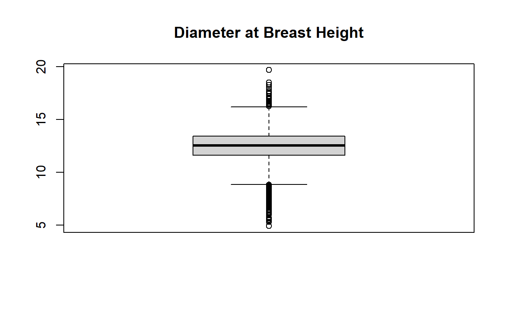

Analising forest inventory data and predicting NAs through least squares regression model
This data was provided by my dendrometry teacher and it is the result of a sistematic collection of data that was carried out between 2017 and 2018 at Três Lagoas, which is a city from Mato Grosso do Sul state. The area has an extent of 1226 acres of Eucalyptus grandis W. Hill ex Maiden x Eucalyptus urophylla S. T. Blake clonal culture with mean age of 2.88 years.
Here we can take a look on the first 6 rows from the data frame which has 3313 obs. of 6 variables:
| area(ha) | spacing | genetic material | age | DBH | heigth |
|---|---|---|---|---|---|
| 42.43 | 3,45X2,40 | 35 | 2.839151 | 12.16 | 16.98621 |
| 42.43 | 3,45X2,40 | 35 | 2.839151 | 11.52 | 16.61542 |
| 42.43 | 3,45X2,40 | 35 | 2.839151 | 12.00 | 16.89602 |
| 42.43 | 3,45X2,40 | 35 | 2.839151 | 11.87 | 16.82587 |
| 42.43 | 3,45X2,40 | 35 | 2.839151 | 11.33 | 16.49516 |
| 42.43 | 3,45X2,40 | 35 | 2.839151 | 12.45 | 17.13653 |
Checking whether we have got NAs or not:
As we can see there are 134 NAs from DBH values that probably represent dead trees, that can be replanted in the future for next rotation. But just to be sure about it, let’s take a look on the age! Because those NAs values also could be trees too much young for DBH.
min(fustes_6$age)
[1] 2.811773
The minimum age turns out the idea of NAs are representing dead trees. Therefore if we would like to get a second rotation forestry would be good to understand the behavior of trees under similar conditions to do future economic analysis. So what would we expect from these trees if they were alive?
We can make an approximation through least squares regression model based on our data and variables to find out their diameter at breast height! And for that we need to pre-process the data…
Checking whether we have got outliers on DBH or not:

As we can see, there are outliers on the data that we want to remove because it’s not good for least squares regression model. The result bellow show us the lower extreme, first quartile, median, third quartile and the upper extreme respectively.
boxplot.stats(fustes_6$DBH)$stats
[1] 8.820 11.585 12.510 13.430 16.180
Automating the process to get the extreme values:
upper_whisker <- boxplot.stats(fustes_6$DBH)$stats[5]
lower_whisker <- boxplot.stats(fustes_6$DBH)$stats[1]
Of course after the upper extreme we’ve got the outliers and before the first whisker as well. And both we are going to remove this way:
outlier_filter_upper <- fustes_6$DBH < upper_whisker
outlier_filter_lower <- fustes_6$DBH > lower_whisker
#filtering outliers:
outlier_filter <- fustes_6[outlier_filter_lower & outlier_filter_upper,]
Now we need to check the class from the variables and if necessary make some changes…
str(fustes_6)
'data.frame': 3313 obs. of 6 variables:
$ area(ha) : num 42.4 42.4 42.4 42.4 42.4 ...
$ spacing : chr "3,45X2,40" "3,45X2,40" "3,45X2,40" "3,45X2,40" ...
$ genetic material: int 35 35 35 35 35 35 35 35 35 35 ...
$ age : num 2.84 2.84 2.84 2.84 2.84 ...
$ DBH : num 12.2 11.5 12 11.9 11.3 ...
$ heigth : num 17 16.6 16.9 16.8 16.5 ...
Categorical casting variables that we will use to predict:
fustes_6$`genetic material` <- as.factor(fustes_6$`genetic material`)
Our formula has the following format: \(\hat{y}=\hat{\beta_0}+\hat{\beta_1}X_1+\hat{\beta_2}X_2\)
dbh_equation <- "DBH ~ `genetic material` + age"
Plotting these variables:
Regression model:
#removing NAs to make the model:
fustes_model <- na.omit(fustes_6)
dbh_model <- lm(
formula = dbh_equation,
data = fustes_model[outlier_filter_lower & outlier_filter_upper,]
)
summary(dbh_model)
Call:
lm(formula = dbh_equation, data = fustes_model[outlier_filter_lower &
outlier_filter_upper, ])
Residuals:
Min 1Q Median 3Q Max
-7.6626 -0.7964 0.1341 1.0160 6.8762
Coefficients:
Estimate Std. Error t value Pr(>|t|)
(Intercept) 3.87366 2.40738 1.609 0.107708
`genetic material`12 -0.52911 0.11485 -4.607 4.26e-06 ***
`genetic material`19 0.12014 0.17866 0.672 0.501359
`genetic material`35 -0.20092 0.08401 -2.392 0.016838 *
`genetic material`60 -0.26753 0.09896 -2.703 0.006905 **
age 3.01675 0.82678 3.649 0.000268 ***
---
Signif. codes: 0 '***' 0.001 '**' 0.01 '*' 0.05 '.' 0.1 ' ' 1
Residual standard error: 1.619 on 2912 degrees of freedom
(264 observations deleted due to missingness)
Multiple R-squared: 0.02809, Adjusted R-squared: 0.02643
F-statistic: 16.84 on 5 and 2912 DF, p-value: < 2.2e-16
Therefore, as we could see above the age and genetic material are going to be useful variables on the predictions of DBH through this model!
Now we are going to isolate the NA values (that we want to predict) and all the columns that we are using to get DBH values:
The last step is to predict and replace those missing values:
dbh_predictions <- predict(dbh_model, newdata = dbh_rows)
dbh_predictions
22 80 122 163 175 181 187
12.23775 12.17994 11.93434 11.93434 11.93434 12.72776 12.72776
209 219 324 328 357 378 421
12.72776 12.72776 11.87653 11.87653 12.08301 12.08301 12.78557
448 455 564 576 588 601 602
12.78557 12.78557 12.60387 12.55431 12.55431 12.55431 12.55431
608 627 628 686 694 695 718
12.55431 12.44424 12.44424 12.62038 12.62038 12.62038 12.62038
776 793 831 859 866 869 879
12.19592 12.16342 12.16342 12.33633 12.33633 12.33633 12.33633
886 887 889 891 905 962 990
12.33633 12.33633 12.33633 12.33633 12.39415 12.61663 12.61663
1009 1027 1036 1045 1057 1060 1124
12.54605 12.54605 12.54605 12.54605 12.54605 12.54605 12.19646
1211 1212 1281 1291 1292 1293 1352
12.56257 12.56257 12.32861 12.79383 12.79383 12.79383 12.42772
1427 1471 1475 1479 1480 1481 1490
12.76079 12.71950 12.71950 12.71950 12.71950 12.71950 12.71950
1491 1496 1498 1501 1503 1504 1509
12.71950 12.71950 12.71950 12.71950 12.71950 12.71950 12.71950
1563 1624 1626 1627 1628 1629 1630
12.61769 12.79383 12.79383 12.79383 12.79383 12.79383 12.79383
1631 1636 1642 1643 1646 1647 1648
12.79383 12.79383 12.79383 12.79383 12.79383 12.79383 12.79383
1649 1650 1651 1660 1662 1663 1664
12.79383 12.79383 12.79383 12.79383 12.79383 12.79383 12.79383
1665 1668 1669 1670 1671 1676 1677
12.79383 12.79383 12.79383 12.79383 12.79383 12.79383 12.79383
1678 1679 1711 1748 1777 1781 1782
12.79383 12.79383 11.84349 11.85175 11.85175 11.85175 11.85175
1788 1791 1794 1873 1886 1923 1924
11.85175 11.85175 11.85175 12.21297 12.21297 12.22123 12.22123
1942 1943 1967 1973 1982 2003 2006
12.22123 12.22123 12.22123 12.73602 12.73602 12.73602 12.73602
2007 2042 2043 2090 2095 2139 2145
12.73602 12.60387 12.60387 12.22070 12.22070 12.71950 12.71950
2200 2201 2208 2226 2400 2626 2799
12.18820 12.18820 12.18820 12.18820 12.55431 12.25427 12.71124
2826
12.71124 Filling the data with predicted values:
fustes_6[is.na(fustes_6$DBH), "DBH"] <- dbh_predictions